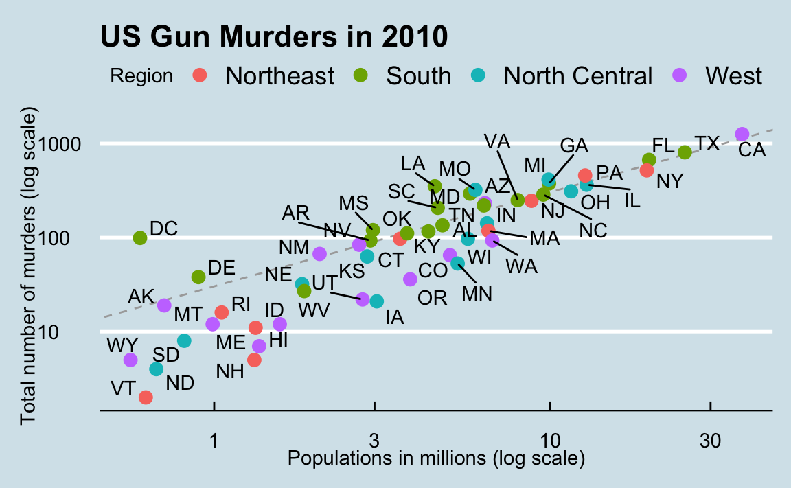

8 ggplot2
Exploratory data visualization is perhaps the greatest strength of R. One can quickly go from idea to data to plot with a unique balance of flexibility and ease. For example, Excel may be easier than R for some plots, but it is nowhere near as flexible. D3.js may be more flexible and powerful than R, but it takes much longer to generate a plot.
Throughout the book, we will be creating plots using the ggplot21 package.
Many other approaches are available for creating plots in R. In fact, the plotting capabilities that come with a basic installation of R are already quite powerful. There are also other packages for creating graphics such as grid and lattice. We chose to use ggplot2 in this book because it breaks plots into components in a way that permits beginners to create relatively complex and aesthetically pleasing plots using syntax that is intuitive and comparatively easy to remember.
One reason ggplot2 is generally more intuitive for beginners is that it uses a grammar of graphics2, the gg in ggplot2. This is analogous to the way learning grammar can help a beginner construct hundreds of different sentences by learning just a handful of verbs, nouns, and adjectives without having to memorize each specific sentence. Similarly, by learning a handful of ggplot2 building blocks and its grammar, you will be able to create hundreds of different plots.
Another reason ggplot2 is easy for beginners is that its default behavior is carefully chosen to satisfy the great majority of cases and is visually pleasing. As a result, it is possible to create informative and elegant graphs with relatively simple and readable code.
One limitation is that ggplot2 is designed to work exclusively with data tables in tidy format. However, a substantial percentage of datasets that beginners work with are in, or can be converted into, this format. An advantage of this approach is that, assuming that our data is tidy, ggplot2 simplifies plotting code and the learning of grammar for a variety of plots.
To use ggplot2 you will have to learn several functions and arguments. These are hard to memorize, so we highly recommend you have the ggplot2 cheat sheet handy. You can get a copy from Posit’s website3 or simply perform an internet search for “ggplot2 cheat sheet”.
8.1 The components of a graph
We will construct a graph that summarizes the US murders dataset that looks like this:

We can clearly see how much states vary across population size and the total number of murders. Not surprisingly, we also see a clear relationship between murder totals and population size. A state falling on the dashed grey line has the same murder rate as the US average. The four geographic regions are denoted with color, which depicts how most southern states have murder rates above the average.
This data visualization shows us pretty much all the information in the data frame The code needed to make this plot is relatively simple. We will learn to create the plot part by part.
The first step in learning ggplot2 is to be able to break a graph apart into components. Let’s break down the plot above and introduce some of the ggplot2 terminology. The main three components to note are:
Data: The US murders data frame is being summarized. We refer to this as the data component.
Geometry: The plot above is a scatterplot. This is referred to as the geometry component. Other possible geometries include barplot, histogram, smooth densities, qqplot, and boxplot. We will learn more about these in Section 8.14.
Aesthetic mapping: The plot uses several visual cues to represent the information provided by the dataset. The two most important cues in this plot are the point positions on the x-axis and y-axis, which represent population size and the total number of murders, respectively. Each point represents a different observation, and we map data about these observations to visual cues like x- and y-scale. Color is another visual cue that we map to region. We refer to this as the aesthetic mapping component. How we define the mapping depends on what geometry we are using.
We also note that:
- The points are labeled with the state abbreviations.
- The range of the x-axis and y-axis appears to be defined by the range of the data. They are both on log-scales.
- There are labels, a title, a legend, and we use the style of The Economist magazine.
The general approach in ggplot2 is to construct the plot part by part by adding layers to a ggplot object, created by the ggplot function. Layers can define geometries, compute summary statistics, define what scales to use, or change styles. To add layers, we use the symbol +. In general, a line of code will look like this:
DATA |>
ggplot()+ LAYER 1 + LAYER 2 + … + LAYER N
We will now illustrate the basics of ggplot2 by dissecting how we construct the plot above.
8.2 Initializing an object with data
We start by loading the relevant dataset which is in the dslabs package:
library(dslabs)The first step in creating a ggplot2 graph is to define a ggplot object. Typically most or all the layers will be mapping variables from the same dataset, so we associate this object with the relevant data frame
ggplot(data = murders)or equivalently
murders |> ggplot()
Both these lines of code render a plot, in this case a blank slate since no geometry has been defined. The only style choice we see is a grey background, the default. We see a plot because an object was created and not assigned to a variable, it was automatically evaluated and printed. But we can assign our plot to an object in the usual way:
p <- ggplot(data = murders)To render the plot associated with this object, we simply print the object p. The following two lines of code each produce the same plot we see above:
print(p)
pTo summarize, p is a ggplot object with the murders data frame as its data component.
8.3 Adding a geometry
A common first step is to let ggplot2 know what geometry to use. We often add multiple geometries, but we at least need one. In our example, we want to make a scatterplot. Geometries are added using functions. Taking a quick look at the cheat sheet, we see that we should use the function geom_point.


(Image courtesy of Posit4. CC-BY-4.0 license5.)
Note that geometry function names follow the pattern: geom_X where X is the name of the geometry. Some examples include geom_histogram, geom_boxplot, and geom_col. We will discuss these further in Section 8.14.
For geom_point to run properly we need to provide data and a mapping. We have already assigned the murders data table to the object p. Next we need to add the layer geom_point to define the geometry. To find out what mappings are expected by this function, we read the Aesthetics section of the geom_point help file:
Aesthetics
geom_point() understands the following aesthetics (required aesthetics are in bold):
x
y
alpha
colour
We see that at least two arguments are required: x and y. Next we explain how to map values from the dataset to the plot.
8.4 Aesthetic mappings
Aesthetic mappings describe how properties of the data connect with features of the graph, such as distance along an axis, size, or color. The aes function connects data with what we see on the graph by defining aesthetic mappings and will be one of the functions you use most often when plotting. This example produces a scatterplot of total murders versus population in millions:
murders |> ggplot() + geom_point(aes(population/10^6, total))
We didn’t use the x and y to define the arguments because the help file showed these are the first and second expected arguments.
The scale and labels are defined by default when adding this layer. Like dplyr functions, aes also uses the variable names from the data component: we can use population and total without having to call them as murders$population and murders$total. The behavior of recognizing the variables from the data component is specific to aes. With ggplot2 functions other than aes, if you try to access the values of population or total, you receive an error.
8.5 Other layers
To shape the plot into its final form, we continue to add layers. A second layer in the plot we wish to make involves adding a label to each point to identify the state. The geom_label and geom_text functions permit us to add text to the plot with and without a rectangle behind the text, respectively.
Because each point (each state in this case) has a label, we need an aesthetic mapping to make the connection between points and labels. By reading the help file, we learn that we supply the mapping between point and label through the label argument of aes. So the code looks like this:
murders |> ggplot() +
geom_point(aes(population/10^6, total)) +
geom_text(aes(population/10^6, total, label = abb))As an example of the unique behavior of aes related to variable names, note that if the added layer was geom_text(aes(population/10^6, total), label = abb), we would result in an error since abb is now outside the call to aes and it is not object in out workspace, it is a variable name in the data component of the ggplot object.
8.6 Global aesthetic mappings
In the previous lines of code, we define the mapping aes(population/10^6, total) twice, once in each layer. We can avoid this by using a global aesthetic mapping. We can do this when we define the blank slate ggplot object. Remember that the mapping argument of ggplot function permits us to define aesthetic mappings. If we define a mapping in ggplot, all the geometries that are added as layers will default to this mapping. So we can simply write the following code to produce the previous plot:
murders |> ggplot(aes(population/10^6, total)) +
geom_point() +
geom_text(aes(label = abb))Note that the mapping for label is only defined in geom_text because geom_point does not use this argument.
If necessary, we can override the global mapping by defining a new mapping within each layer. These local definitions override the global. Here is an example:
murders |> ggplot(aes(population/10^6, total)) +
geom_point() +
geom_text(aes(x = 10, y = 800, label = "Hello there!"))
#> Warning in geom_text(aes(x = 10, y = 800, label = "Hello there!")): All aesthetics have length 1, but the data has 51 rows.
#> ℹ Please consider using `annotate()` or provide this layer with data
#> containing a single row.Clearly, the second call to geom_text does not use population and total.
8.7 Non-aesthetic arguments
Each geometry function has arguments other than aes and data. They tend to be specific to the function and are not mapped to variables in the data. For example, in the plot we wish to make, the points are larger than the default size. As another example, to avoid putting the text on top of the point, we can use the nudge_x argument in geom_text. The code, with the arguments, looks like this:
murders |> ggplot(aes(population/10^6, total)) +
geom_point(size = 3) +
geom_text(aes(label = abb), nudge_x = 1.5)
In Section 8.12 we learn a better way of assuring we can see the points and the labels.
8.8 Categories as colors
For the final plot, we want each region to have a different color. Because this information comes from the data, it is a aesthetic mapping. For our example, we can map color to categories using the color mapping in the geom_point function as follows:
murders |> ggplot(aes(population/10^6, total)) +
geom_point(aes(color = region), size = 3) 
Note the geom_point automatically assigns a different color to each category and also adds a legend! Legends are usually desired, but to avoid adding a legend we can set the geom_point argument show.legend = FALSE.
Note that color is also a non-aesthetic argument in several ggplot2 functions, including geom_point. This argument is not used to map colors to categories, but to change the color of all the points. For example, if we wanted all the points to be blue we would change the layer to geom_point(col = "blue", size = 3).
murders |> ggplot(aes(population/10^6, total)) +
geom_point(color = "blue", size = 3) 
8.9 Updating ggplot objects
In ggplot2 we build plots by parts. A useful feature of the package is that we can update existing ggplot objects by adding layers. For example, we can start by initializing an object with a dataset and a global aesthetic
and then start adding layers. For example, we start by adding the scatter plot
p1 <- p0 + geom_point(aes(color = region), size = 3)and labels:
In the next few sections, we will be building on objects created in previous sections using this approach. This facilitates improving plots as well as testing options. Note that we changed the nudge_x from 1.5 to 0.1 because in the next section we will apply a log transformation and a smaller value is more appropriate.
8.10 Scales
One of the strengths of ggplot2 is that the default behavior often is good enough to achieve our visualization goals. However, it also offers ways in which we can change these defaults. Many of these are changed through the scales functions.
Two examples, are the scale_x_continuous and scale_y_continuous functions which lets us make adjustments to the x-axis and y-axis, respectively. In the final plot we are trying to produce scales in log-scale and this can be achieved by assigning the argument trans = "log10" in these functions. However, because this operation is so common, ggplot2 includes scale_x_log10 and scale_y_log10 functions. We can achieve the desired transformation by adding these layers:
p3 <- p2 + scale_x_log10() + scale_y_log10()
p3Be aware that ggplot2 offers immense flexibility, particularly through the scales functions. We’ve introduced just one of the many available. In subsequent chapters of this book, we’ll provide examples as they become pertinent to our visualizations. However, to familiarize yourself with these functions, we recommend consulting the ggplot2 cheat sheet or conducting internet searches as specific needs arise.
8.11 Annotations
We often want to add annotations to figures that are not derived directly from the aesthetic mapping. Examples of annotation functions are labs, annotate, and geom_abline. The labs function permits adding a title, subtitle, caption, and other labels. Note these can also be defined individually using the functions such as xlab, ylab and ggtitle.
The labs function also allows another change needed for our desired plot: changing the legend title. Because the legend for the color mapping, this is achieved with the color = "NEW_TITLE" argument:
p4 <- p3 + labs(title = "US Gun Murders in 2010",
x = "Populations in millions (log scale)",
y = "Total number of murders (log scale)",
color = "Region")
p4
Our desired final plot includes a line that represents the average murder rate for the entire country. Once we determine the per million rate to be \(r\), the desired line is defined by the formula: \(y = r x\), with \(y\) and \(x\) our axes: total murders and population in millions, respectively. In the log-scale this line turns into: \(\log(y) = \log(r) + \log(x)\), a line with slope 1 and intercept \(\log(r)\). We can compute r using:
To add a line we use the geom_abline function. The ab in the name reminds us we are supplying the intercept (a) and slope (b). The default line has slope 1 and intercept 0 so we only have to define the intercept. Note that the final plot has a dashed line type and is grey and these can be changed through the lty (line type) and color non aesthetic arguments. We add the layer like this:
p5 <- p4 +
geom_abline(intercept = log10(r), lty = 2, color = "darkgrey")
p5
Note that geom_abline does not use any mappings from the data object, once we have the slope.
We are almost there! All we have to do is add optional changes to the style.
8.12 Add-on packages
The power of ggplot2 is augmented further due to the availability of add-on packages. The remaining changes needed to put the finishing touches on our plot require the ggthemes and ggrepel packages.
The style of a ggplot2 graph can be changed using the theme functions. Several themes are included as part of the ggplot2 package. In fact, for most of the plots in this book, we use a function in the dslabs package that automatically sets a default theme:
Many other themes are added by the package ggthemes. Among those is the theme_economist theme that we use here. After installing the package, you can change the style by adding a layer like this:
library(ggthemes)
p6 <- p5 + theme_economist()You can see how some of the other themes look by simply changing the function. For instance, you might try the theme_fivethirtyeight() theme instead.
The final change is to better position of the labels to avoid crowding; currently, some of the labels fall on top of each other. The add-on package ggrepel includes a geometry that adds labels while ensuring that they don’t fall on top of each other. We simply change geom_text to geom_text_repel.
8.13 Putting it all together
Now that we are done testing, we can write one line of code that produces our desired plot from scratch.
library(ggthemes)
library(ggrepel)
r <- murders |>
summarize(rate = sum(total) / sum(population) * 10^6) |>
pull(rate)
murders |>
ggplot(aes(population/10^6, total)) +
geom_abline(intercept = log10(r), lty = 2, color = "darkgrey") +
geom_point(aes(col = region), size = 3) +
geom_text_repel(aes(label = abb)) +
scale_x_log10() +
scale_y_log10() +
labs(title = "US Gun Murders in 2010",
x = "Populations in millions (log scale)",
y = "Total number of murders (log scale)",
color = "Region") +
theme_economist()
8.14 Geometries
In our illustrative example we introduced the scatterplot geometry geom_point. However, ggplot2 has many others and here we demonstrate how to generate plots related to distributions, specifically the plots shown Chapter 7.
8.14.1 Barplots
To generate a barplot we can use the geom_bar geometry. The default is to count the number of each category and draw a bar. Here is the plot for the regions of the US.
However, we often already have a table with the numbers we want to present as a barplot. Here is an example of such a table:
In this case, we use geom_col instead of geom_bar:
8.14.2 Histograms
To generate histograms we use geom_histogram. By looking at the help file for this function, we learn that the only required argument is x, the variable for which we will construct a histogram. We dropped the x because we know it is the first argument. The code looks like this:
heights |> filter(sex == "Female") |>
ggplot(aes(height)) +
geom_histogram(binwidth = 1, fill = "blue", col = "black")Note that we use the optional arguments bandwidth = 1 to change the bin size to 1 inch. The default is to create 30 bins. We also use the optional arguments fill = "blue" and col = "black" to fill the bars with colors and use a different color to outline the bars.
8.14.3 Density plots
To create a smooth density, we use the geom_density. To make a smooth density plot with the data previously shown as a histogram we can use this code:
heights |>
filter(sex == "Female") |>
ggplot(aes(height)) +
geom_density(fill = "blue")Note that we use the optional argument fill to change the color. To change the smoothness of the density, we use the adjust argument to multiply the default value by that adjust. For example, if we want the bandwidth to be twice as big we use:
heights |>
filter(sex == "Female") |>
ggplot(aes(height)) +
geom_density(fill="blue", adjust = 2)8.14.4 Boxplots
The geometry for boxplot is geom_boxplot. As discussed, boxplots are useful for comparing distributions. For example, below are the previously shown heights for women, but compared to men. For this geometry, we need arguments x as the categories, and y as the values.
heights |> ggplot(aes(sex, height)) +
geom_boxplot()8.14.5 Images
Images were not needed for the concepts described in this chapter, but we will use images in Section 10.9, so we introduce the two geometries used to plot images: geom_tile and geom_raster. They behave similarly; to see how they differ, please consult the help file. To create an image in ggplot2 we need a data frame with the x and y coordinates as well as the values associated with each of these. Here is a data frame.
x <- expand.grid(x = 1:12, y = 1:10) |> mutate(z = 1:120) Note that this is the tidy version of a matrix, matrix(1:120, 12, 10). To plot the image we use the following code:
x |> ggplot(aes(x, y, fill = z)) + geom_raster()With these images you will often want to change the color scale. This can be done through the scale_fill_gradientn layer.
x |> ggplot(aes(x, y, fill = z)) +
geom_raster() +
scale_fill_gradientn(colors = terrain.colors(10, 1))
8.15 Grids of plots
There are often reasons to graph plots next to each other. The gridExtra package permits us to do that. Here are the graphs p5 and p6 created in the previous sections:
library(gridExtra)
grid.arrange(p5, p6, ncol = 2)
8.16 Exercises
Start by loading the dplyr and ggplot2 library as well as the murders and heights data.
1. With ggplot2, plots can be saved as objects. For example we can associate a dataset with a plot object like this
p <- ggplot(data = murders)Because data is the first argument we don’t need to spell it out
p <- ggplot(murders)and we can also use the pipe:
p <- murders |> ggplot()What is class of the object p?
2. Remember that to print an object you can use the command print or simply type the object. Print the object p defined in exercise one and describe what you see.
- Nothing happens.
- A blank slate plot.
- A scatterplot.
- A histogram.
3. Using the pipe |>, create an object p but this time associated with the heights dataset instead of the murders dataset.
4. What is the class of the object p you have just created?
5. Now we are going to add a layer and the corresponding aesthetic mappings. For the murders data we plotted total murders versus population sizes. Explore the murders data frame to remind yourself what are the names for these two variables and select the correct answer. Hint: Look at ?murders.
-
stateandabb. -
total_murdersandpopulation_size. -
totalandpopulation. -
murdersandsize.
6. To create the scatterplot we add a layer with geom_point. The aesthetic mappings require us to define the x-axis and y-axis variables, respectively. So the code looks like this:
murders |> ggplot(aes(x = , y = )) +
geom_point()except we have to define the two variables x and y. Fill this out with the correct variable names.
7. Note that if we don’t use argument names, we can obtain the same plot by making sure we enter the variable names in the right order like this:
murders |> ggplot(aes(population, total)) +
geom_point()Remake the plot but now with total in the x-axis and population in the y-axis.
8. If instead of points we want to add text, we can use the geom_text() or geom_label() geometries. The following code
murders |> ggplot(aes(population, total)) + geom_label()will give us the error message: Error: geom_label requires the following missing aesthetics: label
Why is this?
- We need to map a character to each point through the label argument in aes.
- We need to let
geom_labelknow what character to use in the plot. - The
geom_labelgeometry does not require x-axis and y-axis values. -
geom_labelis not a ggplot2 command.
9. Rewrite the code above to use abbreviation as the label through aes
10. Change the color of the labels to blue. How will we do this?
- Adding a column called
bluetomurders. - Because each label needs a different color, we map the colors through
aes. - Use the
colorargument inggplot. - Because we want all labels to be blue, we do not need to map colors, just use the color argument in
geom_label.
11. Rewrite the code above to make the labels blue.
12. Now suppose we want to use color to represent the different regions. In this case which of the following is most appropriate:
- Adding a column called
colortomurderswith the color we want to use. - Because each label needs a different color, we map the colors through the color argument of
aes. - Use the
colorargument inggplot. - Because we want all colors to be blue, we do not need to map colors, just use the color argument in
geom_label.
13. Rewrite the code above to make the labels’ colors be determined by the state’s region.
14. Now we are going to change the x-axis to a log scale to account for the fact the distribution of population is skewed. Let’s start by defining an object p holding the plot we have made up to now
p <- murders |>
ggplot(aes(population, total, label = abb, color = region)) +
geom_label() To change the y-axis to a log scale we learned about the scale_x_log10() function. Add this layer to the object p to change the scale and render the plot.
15. Repeat the previous exercise but now change both axes to be in the log scale.
16. Now edit the code above to add the title “Gun murder data” to the plot. Hint: use the ggtitle function.
17. Now we are going to use the geom_histogram function to make a histogram of the heights in the height data frame. When reading the documentation for this function we see that it requires just one mapping, the values to be used for the histogram. Make a histogram of all the plots.
What is the variable containing the heights?
sexheightsheightheights$height
18. Now create a ggplot object using the pipe to assign the heights data to a ggplot object. Assign height to the x values through the aes function.
19. Now we are ready to add a layer to actually make the histogram. Use the object created in the previous exercise and the geom_histogram function to make the histogram.
20. Note that when we run the code in the previous exercise we get the warning: stat_bin() using bins = 30. Pick better value with binwidth.
Use the binwidth argument to change the histogram made in the previous exercise to use bins of size 1 inch.
21. Instead of a histogram, we are going to make a smooth density plot. In this case we will not make an object, but instead render the plot with one line of code. Change the geometry in the code previously used to make a smooth density instead of a histogram.
22. Now we are going to make a density plot for males and females separately. We can do this using the group argument. We assign groups via the aesthetic mapping as each point needs to a group before making the calculations needed to estimate a density.
23. We can also assign groups through the color argument. This has the added benefit that it uses colors to distinguish the groups. Change the code above to use color.
24. We can also assign groups through the fill argument. This has the added benefit that it uses colors to distinguish the groups, like this:
heights |>
ggplot(aes(height, fill = sex)) +
geom_density() However, here the second density is drawn over the other. We can make the curves more visible by using alpha blending to add transparency. Set the alpha parameter to 0.2 in the geom_density function to make this change.